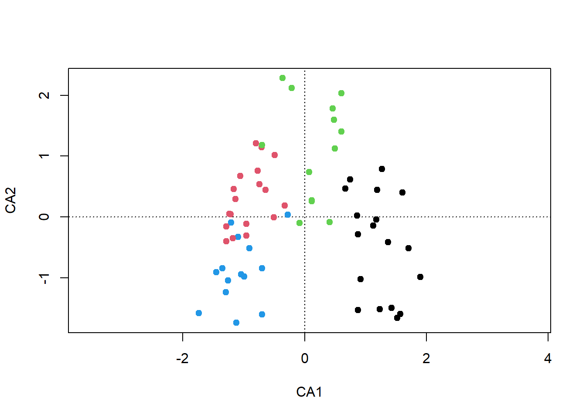
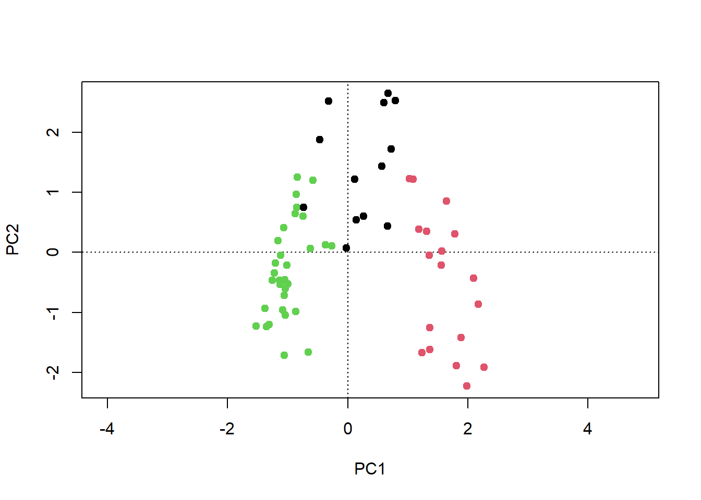
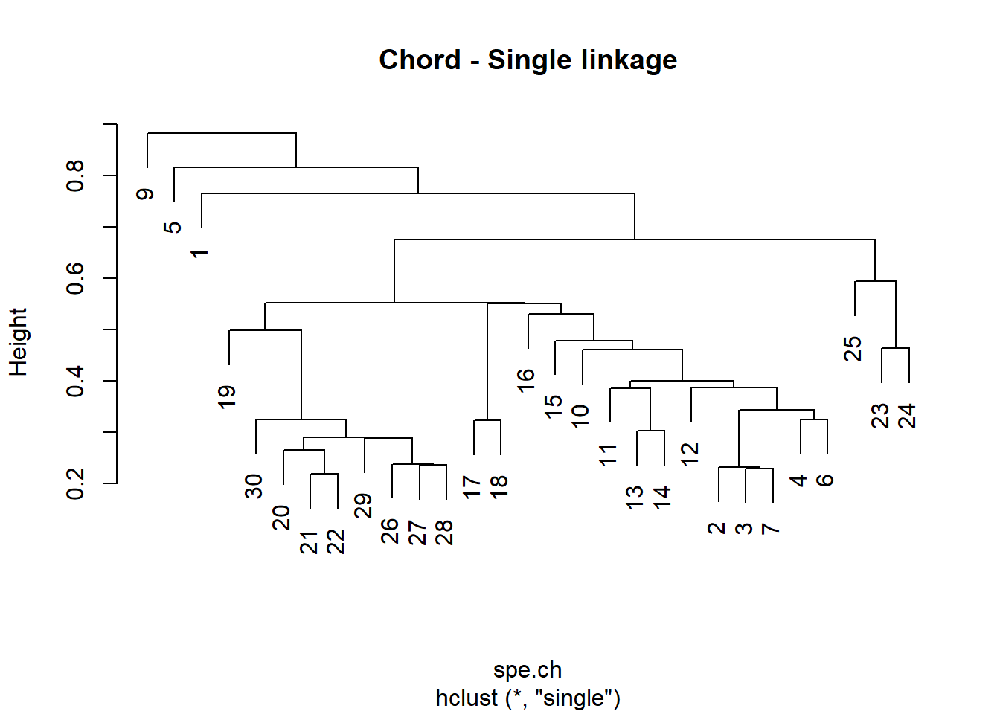
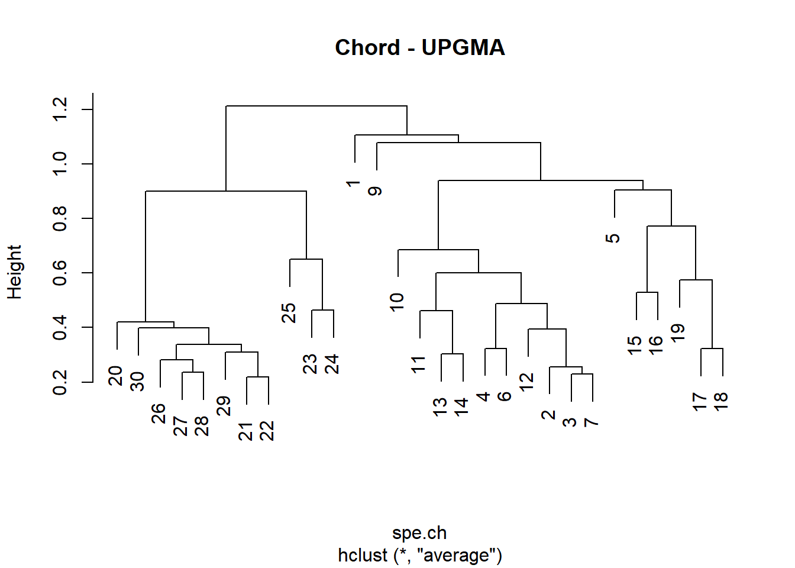
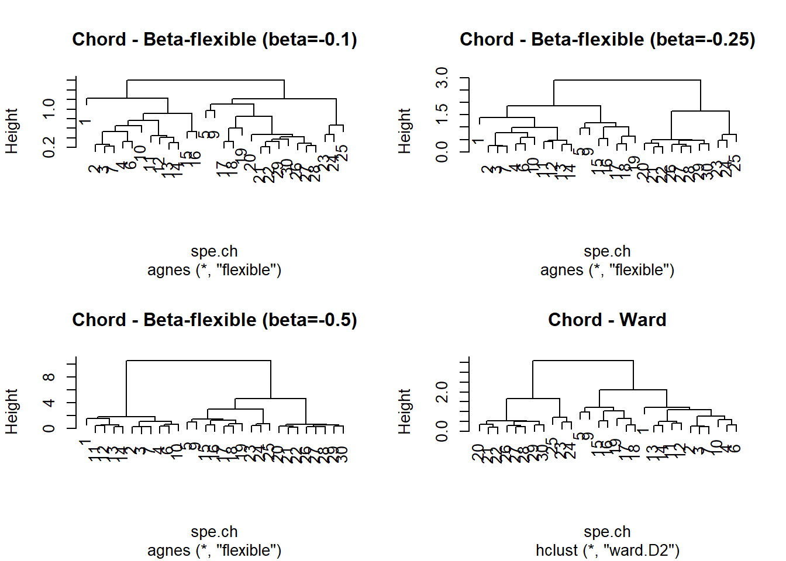
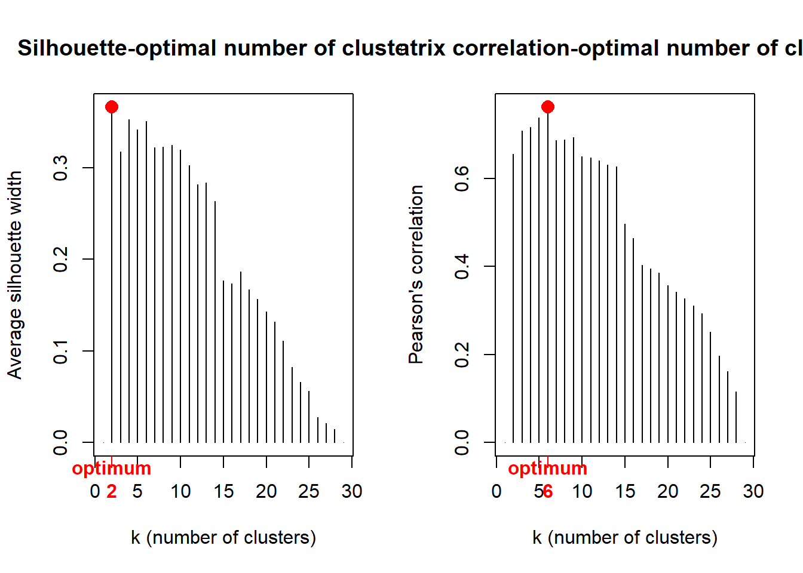
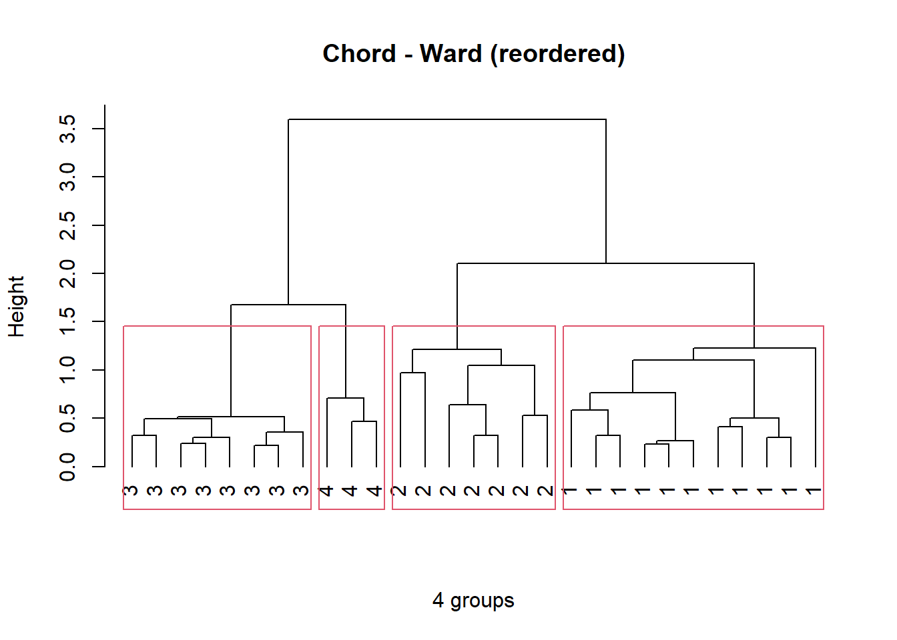

# Das Moordatenset sveg laden
library("readr")
sveg <- read_delim("datasets/stat5-8/dave_sveg.csv")
# PCA und CA rechnen
library("vegan")
pca <- rda(sveg^0.25, scale = TRUE)
ca <- cca(sveg^0.5)
# k-means-Clustering mit 4 Gruppen durchführen
kmeans.1 <- kmeans(sveg, 4)Stat8: Demo
- Download dieses Demoscript via “</>Code” (oben rechts)
- Datensatz Doubs.RData
- Datensatz dave_sveg.csv von Wildi (2017)
- Funktion drawmap.R drawmap.R
- Funktion hcoplot.R hcoplot.R
k-means clustering
# Clustering-Resultat in Ordinationsplots darstellen
plot(ca, type = "n")
points(ca, display = "sites", pch=19, col = kmeans.1[[1]])
# k-means Clustering mit 3 Clusters
kmeans.2 <- kmeans(sveg, 3)
plot(pca, type = "n")
points(pca, display = "sites", pch=19, col = kmeans.2[[1]])
# mit 3. Achse darstellen
plot(pca, choices = c(1, 3), type = "n")
points(pca, choices = c(1, 3), display = "sites", pch = 19, col=kmeans.2[[1]])
# k-means partitioning, 2 to 10 groups
KM.cascade <- cascadeKM(sveg, inf.gr = 2, sup.gr = 10, iter = 100, criterion = "ssi")
summary(KM.cascade) Length Class Mode
partition 567 -none- numeric
results 18 -none- numeric
criterion 1 -none- character
size 90 -none- numeric KM.cascade$results 2 groups 3 groups 4 groups 5 groups 6 groups 7 groups
SSE 1840.13571 1629.4399038 1488.2961538 1378.3369048 1286.5005411 1214.3219697
ssi 0.26103 0.2716237 0.3630755 0.3101818 0.3866348 0.4499705
8 groups 9 groups 10 groups
SSE 1156.7314935 1101.5523810 1053.1476190
ssi 0.3995404 0.5187903 0.4732336KM.cascade$partition 2 groups 3 groups 4 groups 5 groups 6 groups 7 groups 8 groups 9 groups
1 1 3 4 4 6 7 3 1
2 1 3 3 2 1 3 2 9
3 1 3 4 4 6 7 3 1
4 1 3 4 4 6 7 3 1
5 1 3 3 2 1 3 2 9
6 1 3 4 4 1 3 2 9
7 1 3 4 4 6 7 3 1
8 1 3 4 4 6 7 3 1
9 1 3 4 4 6 7 3 1
10 1 3 3 2 5 1 5 5
11 1 3 4 4 6 7 3 1
12 1 3 3 2 1 3 2 9
13 1 3 3 2 5 1 5 6
14 1 3 3 2 1 3 2 9
15 1 3 3 2 1 3 2 9
16 1 3 3 2 1 3 2 9
17 1 3 3 2 5 1 5 5
18 2 2 2 3 4 4 8 7
19 1 3 3 2 1 3 2 9
20 1 3 3 2 5 1 5 5
21 1 3 4 4 6 7 3 5
22 1 3 3 2 1 3 2 9
23 2 2 2 3 4 4 8 7
24 1 3 4 4 6 7 3 5
25 1 3 4 4 6 7 3 5
26 2 1 1 3 4 4 8 7
27 1 3 3 2 5 1 5 6
28 1 3 3 2 5 1 5 6
29 1 3 3 2 5 1 5 6
30 1 3 3 2 5 1 5 5
31 2 2 2 1 3 6 7 4
32 1 3 3 2 5 1 5 6
33 1 3 3 2 5 1 5 5
34 1 2 2 1 3 6 7 4
35 2 2 2 1 3 6 7 4
36 1 3 3 2 5 1 5 6
37 1 3 3 2 5 1 5 6
38 2 2 2 3 4 4 8 7
39 2 1 1 5 2 5 6 3
40 1 3 4 4 6 7 3 1
41 2 1 1 5 2 5 1 8
42 2 1 1 5 2 5 6 3
43 2 1 1 5 2 5 1 8
44 1 2 2 1 3 6 7 4
45 2 2 2 3 4 4 8 7
46 2 2 2 1 3 6 7 4
47 1 2 2 1 3 6 7 6
48 2 1 1 5 2 5 1 8
49 2 2 2 1 3 6 7 4
50 2 2 2 1 3 6 7 4
51 2 1 1 3 4 2 4 2
52 2 1 1 5 2 5 1 8
53 2 1 1 5 2 5 4 2
54 2 1 1 3 4 2 4 2
55 2 1 1 3 4 2 4 2
56 2 1 1 5 2 5 1 8
57 2 1 1 3 4 2 4 2
58 2 1 1 3 4 2 4 2
59 2 1 1 3 4 4 8 7
60 2 1 1 3 4 4 8 7
61 2 2 2 3 4 4 8 7
62 2 1 1 5 2 5 6 3
63 2 1 1 3 4 2 4 2
10 groups
1 2
2 6
3 2
4 2
5 6
6 6
7 2
8 2
9 2
10 8
11 7
12 6
13 5
14 6
15 6
16 6
17 8
18 7
19 6
20 8
21 8
22 6
23 4
24 8
25 8
26 4
27 5
28 5
29 5
30 8
31 10
32 5
33 8
34 10
35 10
36 5
37 5
38 7
39 3
40 2
41 1
42 3
43 1
44 10
45 4
46 10
47 5
48 1
49 10
50 10
51 9
52 1
53 9
54 9
55 9
56 1
57 9
58 9
59 4
60 4
61 4
62 3
63 9# k-means visualisation
plot(KM.cascade, sortg = TRUE)Agglomarative Clusteranalyse
mit Daten und Skripten aus Borcard u. a. (2011)
# Daten laden
load("datasets/stat5-8/Doubs.RData") # Remove empty site 8
spe <- spe[-8, ]
env <- env[-8, ]
spa <- spa[-8, ]
latlong <- latlong[-8, ]Dendogramme berechnen und ploten
## Hierarchical agglomerative clustering of the species abundance
library("cluster")
# Compute matrix of chord distance among sites
spe.norm <- decostand(spe, "normalize")
spe.ch <- vegdist(spe.norm, "euc")
# Attach site names to object of class 'dist'
attr(spe.ch, "Labels") <- rownames(spe)
par(mfrow = c(1, 1))
# Compute single linkage agglomerative clustering
spe.ch.single <- hclust(spe.ch, method = "single")
# Plot a dendrogram using the default options
plot(spe.ch.single, labels = rownames(spe), main = "Chord - Single linkage")
# Compute complete-linkage agglomerative clustering
spe.ch.complete <- hclust(spe.ch, method = "complete")
plot(spe.ch.complete, labels = rownames(spe), main = "Chord - Complete linkage")
# Compute UPGMA agglomerative clustering
spe.ch.UPGMA <- hclust(spe.ch, method = "average")
plot(spe.ch.UPGMA, labels = rownames(spe), main = "Chord - UPGMA")
# Compute centroid clustering
spe.ch.centroid <- hclust(spe.ch, method = "centroid")
plot(spe.ch.centroid, labels = rownames(spe), main = "Chord - Centroid")
# Compute Ward's minimum variance clustering
spe.ch.ward <-hclust(spe.ch, method = "ward.D2")
plot(spe.ch.ward, labels = rownames(spe), main = "Chord - Ward")
# Compute beta-flexible clustering using cluster::agnes()
# beta = -0.1
spe.ch.beta1 <- agnes(spe.ch, method = "flexible", par.method = 0.55)
# beta = -0.25
spe.ch.beta2 <- agnes(spe.ch, method = "flexible", par.method = 0.625)
# beta = -0.5
spe.ch.beta3 <- agnes(spe.ch, method = "flexible", par.method = 0.75)
# Change the class of agnes objects
class(spe.ch.beta1)[1] "agnes" "twins"spe.ch.beta1 <- as.hclust(spe.ch.beta1)
class(spe.ch.beta1)[1] "hclust"spe.ch.beta2 <- as.hclust(spe.ch.beta2)
spe.ch.beta3 <- as.hclust(spe.ch.beta3)
par(mfrow = c(2, 2))
plot(spe.ch.beta1, labels = rownames(spe), main = "Chord - Beta-flexible (beta=-0.1)")
plot(spe.ch.beta2, labels = rownames(spe), main = "Chord - Beta-flexible (beta=-0.25)")
plot(spe.ch.beta3, labels = rownames(spe), main = "Chord - Beta-flexible (beta=-0.5)")
# Compute Ward's minimum variance clustering
spe.ch.ward <- hclust(spe.ch, method = "ward.D2")
plot(spe.ch.ward, labels = rownames(spe), main = "Chord - Ward")
Cophenetic correlations
# Single linkage clustering
spe.ch.single.coph <- cophenetic(spe.ch.single)
cor(spe.ch, spe.ch.single.coph)[1] 0.599193# Complete linkage clustering
spe.ch.comp.coph <- cophenetic(spe.ch.complete)
cor(spe.ch, spe.ch.comp.coph)[1] 0.7655628# Average clustering
spe.ch.UPGMA.coph <- cophenetic(spe.ch.UPGMA)
cor(spe.ch, spe.ch.UPGMA.coph)[1] 0.8608326# Ward clustering
spe.ch.ward.coph <- cophenetic(spe.ch.ward)
cor(spe.ch, spe.ch.ward.coph)[1] 0.7998516# Shepard-like diagrams
par(mfrow = c(2, 2))
plot(spe.ch, spe.ch.single.coph,
xlab = "Chord distance", ylab = "Cophenetic distance",
asp = 1, xlim = c(0, sqrt(2)), ylim = c(0, sqrt(2)),
main = c("Single linkage", paste("Cophenetic correlation =",
round(cor(spe.ch, spe.ch.single.coph), 3))))
abline(0, 1)
lines(lowess(spe.ch, spe.ch.single.coph), col = "red")
plot(spe.ch, spe.ch.comp.coph,
xlab = "Chord distance", ylab = "Cophenetic distance",
asp = 1, xlim = c(0, sqrt(2)), ylim = c(0, sqrt(2)),
main = c("Complete linkage", paste("Cophenetic correlation =",
round(cor(spe.ch, spe.ch.comp.coph), 3))))
abline(0, 1)
lines(lowess(spe.ch, spe.ch.comp.coph), col = "red")
plot(spe.ch, spe.ch.UPGMA.coph,
xlab = "Chord distance", ylab = "Cophenetic distance",
asp = 1, xlim = c(0, sqrt(2)), ylim = c(0, sqrt(2)),
main = c("UPGMA", paste("Cophenetic correlation =",
round( cor(spe.ch, spe.ch.UPGMA.coph), 3))))
abline(0, 1)
lines(lowess(spe.ch, spe.ch.UPGMA.coph), col = "red")
plot(spe.ch, spe.ch.ward.coph,
xlab = "Chord distance", ylab = "Cophenetic distance",
asp = 1, xlim = c(0, sqrt(2)), ylim = c(0, max(spe.ch.ward$height)),
main = c("Ward", paste("Cophenetic correlation =",
round(cor(spe.ch, spe.ch.ward.coph), 3))))
abline(0, 1)
lines(lowess(spe.ch, spe.ch.ward.coph), col = "red")
Optimale Anzahl Cluster
library("labdsv")
## Select a dendrogram (Ward/chord) and apply three criteria
## to choose the optimal number of clusters
# Choose and rename the dendrogram ("hclust" object)
hc <- spe.ch.ward
# hc <- spe.ch.beta2
# hc <- spe.ch.complete
par(mfrow = c(1, 2))
# Average silhouette widths (Rousseeuw quality index)
Si <- numeric(nrow(spe))
for (k in 2:(nrow(spe) - 1))
{
sil <- silhouette(cutree(hc, k = k), spe.ch)
Si[k] <- summary(sil)$avg.width
}
k.best <- which.max(Si)
plot(1:nrow(spe), Si, type = "h",
main = "Silhouette-optimal number of clusters",
xlab = "k (number of clusters)", ylab = "Average silhouette width")
axis(1, k.best,paste("optimum", k.best, sep = "\n"), col = "red",
font = 2, col.axis = "red")
points(k.best,max(Si), pch = 16, col = "red",cex = 1.5)
# Optimal number of clusters according to matrix correlation
# statistic (Pearson)
# Homemade function grpdist from Borcard et al. (2018)
grpdist <- function(X)
{
require(cluster)
veg <- as.data.frame(as.factor(X))
distgr <- daisy(veg, "gower")
distgr
}
kt <- data.frame(k = 1:nrow(spe), r = 0)
for (i in 2:(nrow(spe) - 1))
{
gr <- cutree(hc, i)
distgr <- grpdist(gr)
mt <- cor(spe.ch, distgr, method = "pearson")
kt[i, 2] <- mt
}
k.best <- which.max(kt$r)
plot(kt$k,kt$r, type = "h",
main = "Matrix correlation-optimal number of clusters",
xlab = "k (number of clusters)", ylab = "Pearson's correlation")
axis(1, k.best, paste("optimum", k.best, sep = "\n"),
col = "red", font = 2, col.axis = "red")
points(k.best, max(kt$r), pch = 16, col = "red", cex = 1.5)
# Optimal number of clusters according as per indicator species
# analysis (IndVal, Dufrene-Legendre; package: labdsv)
IndVal <- numeric(nrow(spe))
ng <- numeric(nrow(spe))
for (k in 2:(nrow(spe) - 1))
{
iva <- indval(spe, cutree(hc, k = k), numitr = 1000)
gr <- factor(iva$maxcls[iva$pval <= 0.05])
ng[k] <- length(levels(gr)) / k
iv <- iva$indcls[iva$pval <= 0.05]
IndVal[k] <- sum(iv)
}
k.best <- which.max(IndVal[ng == 1]) + 1
col3 <- rep(1, nrow(spe))
col3[ng == 1] <- 3
par(mfrow = c(1, 2))
plot(1:nrow(spe), IndVal, type = "h",
main = "IndVal-optimal number of clusters",
xlab = "k (number of clusters)", ylab = "IndVal sum", col = col3)
axis(1,k.best,paste("optimum", k.best, sep = "\n"),
col = "red", font = 2, col.axis = "red")
points(which.max(IndVal),max(IndVal),pch = 16,col = "red",cex = 1.5)
text(28, 15.7, "a", cex = 1.8)
plot(1:nrow(spe),ng,
type = "h",
xlab = "k (number of clusters)",
ylab = "Ratio",
main = "Proportion of clusters with significant indicator species",
col = col3)
axis(1,k.best,paste("optimum", k.best, sep = "\n"),
col = "red", font = 2, col.axis = "red")
points(k.best,max(ng), pch = 16, col = "red", cex = 1.5)
text(28, 0.98, "b", cex = 1.8)
Final dendrogram with the selected clusters
# Choose the number of clusters
k <- 4
# Silhouette plot of the final partition
spech.ward.g <- cutree(spe.ch.ward, k = k)
sil <- silhouette(spech.ward.g, spe.ch)
rownames(sil) <- row.names(spe)
plot(sil, main = "Silhouette plot - Chord - Ward", cex.names = 0.8, col = 2:(k + 1), nmax = 100)
# Reorder clusters
library("gclus")
spe.chwo <- reorder.hclust(spe.ch.ward, spe.ch)
# Plot reordered dendrogram with group labels
par(mfrow = c(1, 1))
plot(spe.chwo, hang = -1, xlab = "4 groups", ylab = "Height", sub = "",
main = "Chord - Ward (reordered)", labels = cutree(spe.chwo, k = k))
rect.hclust(spe.chwo, k = k)
# Plot the final dendrogram with group colors (RGBCMY...)
# Fast method using the additional hcoplot() function:
# Usage:
# hcoplot(tree = hclust.object,
# diss = dissimilarity.matrix,
# lab = object labels (default NULL),
# k = nb.clusters,
# title = paste("Reordered dendrogram from",deparse(tree$call),
# sep="\n"))
source("stat5-8/hcoplot.R")
hcoplot(spe.ch.ward, spe.ch, lab = rownames(spe), k = 4)
# Plot the Ward clusters on a map of the Doubs River
# (see Chapter 2)
source("stat5-8/drawmap.R")
drawmap(xy = spa, clusters = spech.ward.g, main = "Four Ward clusters along the Doubs River")
Miscellaneous graphical outputs
# konvertieren von "hclust" Objekt in ein Dendogram Objekt
dend <- as.dendrogram(spe.ch.ward)
# Heat map of the dissimilarity matrix ordered with the dendrogram
heatmap(as.matrix(spe.ch), Rowv = dend, symm = TRUE, margin = c(3, 3))# Ordered community table
# Species are ordered by their weighted averages on site scores.
# Dots represent absences.
library("vegan")
or <- vegemite(spe, spe.chwo)
32222222222 111111 1111
09876210543959876506473221341
Icme 5432121......................
Abbr 54332431.....1...............
Blbj 54542432.1...1...............
Anan 54432222.....111.............
Gyce 5555443212...11..............
Scer 522112221...21...............
Cyca 53421321.....1111............
Rham 55432333.....221.............
Legi 35432322.1...1111............
Alal 55555555352..322.............
Chna 12111322.1...211.............
Titi 53453444...1321111.21........
Ruru 55554555121455221..1.........
Albi 53111123.....2341............
Baba 35342544.....23322.........1.
Eslu 453423321...41111..12.1....1.
Gogo 5544355421..242122111......1.
Pefl 54211432....41321..12........
Pato 2211.222.....3344............
Sqce 3443242312152132232211..11.1.
Lele 332213221...52235321.1.......
Babl .1111112...32534554555534124.
Teso .1...........11254........23.
Phph .1....11...13334344454544455.
Cogo ..............1123......2123.
Satr .1..........2.123413455553553
Thth .1............11.2......2134.
29 sites, 27 species